정보처리산업기사 (2017-05-07 기출문제)
1과목: 데이터 베이스
1. CREATE TABLE에 대한 설명으로 틀린 것은?
- 테이블 명 및 해당 테이블에 속하는 칼럼 이름, 데이터 타입 등을 명시한다.
- PRIMARY KEY 절에서는 기본키 속성을 지정한다.
- CHECK 절은 인덱스에 대한 정보를 저장한다.
- NOT NULL은 널 값을 허용하지 않을 때 지정한다.
(정답률: 74%)

2. 데이터베이스 설계 단계 중 물리적 설계 단계와 거리가 먼 것은?
- 저장 레코드 양식 설계
- 레코드 집중의 분석 및 설계
- 트랜잭션 모델링
- 접근 경로 설계
(정답률: 73%)
3. 관계형 데이터 모델에서 릴레이션의 특징이 아닌 것은?
- 하나의 튜플에서 각 속성은 원자값을 가진다.
- 하나의 릴레이션에서 튜플들의 순서는 의미가 있다.
- 모든 튜플은 서로 다른 값(유일값)을 갖는다.
- 각 속성은 유일한 이름을 가진다.
(정답률: 79%)
4. 분할과 정복(Divide and Conquer) 방법에 의한 정렬은?
- 삽입 정렬
- 퀵 정렬
- 버블 정렬
- 힙 정렬
(정답률: 52%)
5. 뷰(VIEW)의 특징으로 옳지 않은 것은?
- 뷰에 대한 검색 연산은 기본 테이블 검색 연산과 비교하여 제약이 따른다.
- DBA는 보안 측면에서 뷰를 활용할 수 있다.
- 뷰 위에 또 다른 뷰를 정의할 수 있다.
- 뷰는 하나 이상의 기본 테이블로부터 유도되어 만들어지는 가상 테이블이다.
(정답률: 62%)
6. 관계 데이터 모델에서 하나의 애트리뷰트가 취할 수 있는 모든 원자값들의 집합은?
- 도메인
- 스키마
- 스택
- 엔티티
(정답률: 73%)
7. 정규화를 할 때 발생하는 이상현상(anomaly)의 원인은?
- 데이터 중복
- 데이터 독립성
- 릴레이션의 차수가 높을 때
- 데이터의 일관성
(정답률: 76%)
8. n개의 정점으로 구성된 무방향 그래프의 최대 간선 수는?
- n(n＋1)
- n(n-1)/2
- (n-2)/2
- n-5
(정답률: 61%)
9. SQL 문장에서 group by 절에 의해 선택된 그룹의 탐색조건을 지정할 수 있는 것은?
- having
- where
- union
- join
(정답률: 67%)
10. 다음 ( ) 안의 내용으로 알맞은 것은?
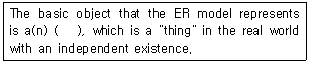
- model
- entity
- domain
- relation
(정답률: 68%)
11. 버블 정렬을 이용한 오름차순 정렬시 3회전 후의 결과는?
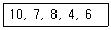
- 7, 8, 4, 6, 10
- 7, 10, 8, 4, 6
- 4, 6, 7, 8, 10
- 7, 4, 6, 8, 10
(정답률: 76%)
12. 릴레이션 A는 5개의 튜플로 구성되어 있고, 릴레이션 B는 3개의 튜플로 구성되어 있다. 두 릴레이션에 대한 카티션프로덕트 연산 결과로 몇 개의 튜플이 생성되는가?
- 2
- 5
- 8
- 15
(정답률: 79%)
13. 시스템 카탈로그에 대한 설명으로 옳지 않은 것은?
- 시스템 자체에 관련 있는 다양한 객체에 관한 정보를 포함하는 시스템 데이터베이스이다.
- 데이터 사전이라고도 한다.
- 무결성 확보를 위하여 일반 사용자는 내용을 검색해 볼 수 없다.
- 기본 테이블, 뷰, 인덱스, 패키지, 접근 권한 등의 정보를 저장한다.
(정답률: 85%)
14. 관계 대수의 JOIN 연산자 기호는?
- ⋈
- ÷
- π
- ∩
(정답률: 80%)
15. 다음과 같은 테이블이 있다. 이 릴레이션의 차수는?
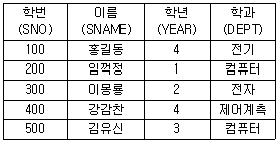
- 500
- 24
- 4
- 5
(정답률: 72%)
16. 다음 그림에서 트리의 차수는?
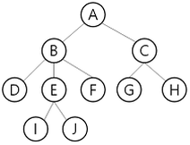
- 3
- 4
- 5
- 10
(정답률: 80%)
17. 다음 자료에서 65를 찾기 위하여 2진 검색할 경우 비교해야 할 횟수는?(오류 신고가 접수된 문제입니다. 반드시 정답과 해설을 확인하시기 바랍니다.)
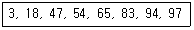
- 2
- 3
- 4
- 5
(정답률: 48%)
18. 선형 자료구조에 해당하지 않는 것은?
- 큐
- 트리
- 스택
- 리스트
(정답률: 83%)
19. SQL 명령 중 DML에 속하지 않는 것은?
- SELECT
- INSERT
- DELETE
- ALTER
(정답률: 82%)
20. 릴레이션의 기본키를 구성하는 어떤 속성도 널(Null) 값이나 중복 값을 가질 수 없음을 의미하는 것은?
- 참조 무결성 제약조건
- 정보 무결성 제약조건
- 개체 무결성 제약조건
- 주소 무결성 제약조건
(정답률: 80%)
2과목: 전자 계산기 구조
21. 마이크로오퍼레이션 형식에 관한 설명으로 가장 옳은 것은?
- 조건 필드는 분기에 사용될 조건 플래그를 지정한다.
- 연산 필드가 두 개인 경우 순차적으로 두 개의 연산들이 수행된다.
- 분기 필드는 다음에 실행할 마이크로명령어 주소로 사용된다.
- 주소 필드는 다음에 실행할 마이크로명령어의 주소를 결정하는 방법을 명시한다.
(정답률: 32%)
22. 중앙처리장치와 입출력장치의 처리 속도 불균형을 보완하며, 중앙처리장치를 입출력 조작에서 해방시켜서 중앙처리장치 본래의 일을 보다 많이 할 수 있도록 하기 위하여 필요한 것은?
- 완충 기억장치
- 채널
- 제어장치
- 연산 논리장치
(정답률: 71%)
23. 두 개의 수를 병렬로 더할 때, 속도의 저하를 가져 오는 것이 캐리 전달 시간(carry propagation time)이다. 이 캐리 전달 시간을 줄이기 위해서 사용되는 방법은?
- 캐리 증가(carry increment)
- 캐리 감소(carry decrement)
- 캐리 무시(carry ignore)
- 캐리 예측(carry look-ahead)
(정답률: 64%)
24. 기억장치 계층 구조 상 가장 접근 속도가 빠른 것은?
- DASD
- SASD
- RAM
- Register
(정답률: 77%)
25. 논리식 Y = A＋AB＋AC를 간략화 하면?
- Y = A
- Y = B
- Y = A＋B
- Y = A＋C
(정답률: 62%)
26. 최초 프로그램이 내장되어 변경할 수 없는 ROM은?
- PROM
- Mask ROM
- EPROM
- EAROM
(정답률: 58%)
27. 인터럽트를 요청한 I/O 장치가 프로세서에게 분기할 곳에 대한 정보를 제공하는 인터럽트 방식은?
- I/O 인터럽트
- Nonvectored 인터럽트
- Vectored 인터럽트
- 소프트웨어 인터럽트
(정답률: 48%)
28. 타이머에 의해 발생되는 인터럽트에 해당하는 것은?
- Program Interrupt
- External Interrupt
- I/O Interrupt
- Machine Check Interrupt
(정답률: 44%)
29. Interrupt 발생 시 복귀 주소를 기억시키는 데 사용되는 것은?
- Stack
- PC
- IR
- MAR
(정답률: 50%)
30. 인터럽트 발생 시 프로세스의 상태 보존의 필요성을 가장 옳게 설명한 것은?
- 인터럽트를 요청한 해당 장치에 대한 인터럽트 서비스를 완료하고 원래 수행 중이던 프로그램으로 복귀하기 위해
- 인터럽트 처리 속도를 향상시키기 위해
- 인터럽트 발생 횟수를 카운트하고 일정 횟수 이상이 되면 시스템을 정지시키기 위해
- 인터럽트 요청 장치와 그 장치의 우선순위를 파악하기 위해
(정답률: 74%)
31. 가상 메모리에서 페이지 교체(Replacement) 알고리즘에 해당하는 것은?
- Write-back 알고리즘
- match 알고리즘
- Write-through 알고리즘
- First In First Out(FIFO) 알고리즘
(정답률: 67%)
32. 명령어를 수행하기 위한 CPU의 내부 세분화 동작은?
- micro operation
- control operation
- fetch
- automation
(정답률: 68%)
33. 하나의 프로그램 실행을 하드웨어적 수단으로 중단하고, 나중에 재개할 수 있도록 다른 프로그램의 실행으로 옮기는 기능은?
- subroutine
- channel
- interrupt
- interface
(정답률: 67%)
34. 한 개의 CPU가 있는 컴퓨터에서 여러 개의 프로그램(program)을 동시에 기억장치에서 보관 시킨 후 번갈아가며 처리하는 방법은?
- Multi processing
- Batch processing
- Multi programming
- Double programming
(정답률: 53%)
35. B000H 번지에서 DAFFH 번지까지의 메모리 영역은 모두 몇 페이지(page)인가?
- 23
- 33
- 43
- 53
(정답률: 49%)
36. 입력 X, Y, Z에 대한 전가산기(Full Adder)의 캐리(Carry) 비트 C를 논리식으로 가장 옳게 나타낸 것은?
- C = XY＋XZ
- C = XYZ
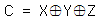
(정답률: 48%)
37. 2의 보수 표현 방식으로 8비트의 기억공간에 정수를 표현할 때 표현 가능 범위는?
- -27~＋27
- -28~＋28
- -27~＋(27-1)
- -28~＋(28-1)
(정답률: 50%)
38. 동기 가변식 마이크로 사이클에 관한 설명으로 틀린 것은?
- CPU의 시간을 효율적으로 이용할 수 있다.
- 마이크로 오퍼레이션 수행시간이 현저한 차이를 나타낼 때 사용한다.
- 제어기의 구현이 단순하다.
- 그룹 화된 각 마이크로 오퍼레이션들에 대하여 서로 다른 사이클 시간을 정의한다.
(정답률: 69%)
39. 주기억 장치에 기억된 명령을 꺼내서 해독하고, 시스템 전체에 지시 신호를 내는 것은?
- 채널(channel)
- 제어 장치(control unit)
- 연산 논리 장치(ALU)
- 입출력 장치(I/O unit)
(정답률: 55%)
40. 다음 명령 중에서 주소 필드(address field)가 필요 없는 명령은?
- 데이터 전송 명령
- 산술 명령
- Skip 명령
- 서브루틴 Call 명령
(정답률: 55%)
3과목: 시스템분석설계
41. 입력 데이터의 오류발생 원인 중 좌우자리를 바꾸어서 발생하는 오류로 가장 옳은 것은?
- 오자오류
- 전위오류
- 추가오류
- 임의오류
(정답률: 79%)
42. 시스템 설계 단계에서 프로세스 설계 시 유의사항으로 가장 적합하지 않은 것은?
- 처리 전개의 사상을 다양하게 해야 한다.
- 프로그래머의 코딩 능력을 고려한다.
- 오류(Error)처리는 간결하게 한다.
- 분류처리는 될 수 있는 대로 적게 한다.
(정답률: 41%)
43. 시스템에 대한 기초 조사 방법 중 수집되어야 할 정보가 여러 사람의 의견으로부터 도출되어야 하거나, 지리적으로 멀리 떨어져 있는 곳의 정보를 수집할 때, 주로 사용되는 방법은?
- 현장 조사
- 질문서 조사
- 자료 조사
- 면담 조사
(정답률: 66%)
44. 다음 중 기본설계에서 하는 것이 아닌 것은?
- 하드웨어 구성결정
- 시스템 개발, 운용 계획의 설정
- 기본 모델(Model)설계
- 코드(Code)설계
(정답률: 58%)
45. 사용자 인터페이스 설계를 위한 인간공학적 원리에 포함되지 않는 것은?
- 지름길을 제공한다.
- 작업의 진행 상황을 알려준다.
- 일관된 인터페이스를 가진다.
- 사용자의 비전문성을 인정하지 않는다.
(정답률: 77%)
46. 중량, 용량, 거리, 크기, 면적 등의 물리적 수치를 직접 코드에 적용시키는 코드 방식은?
- 순차코드(sequence code)
- 표의숫자코드(significant digit code)
- 블록코드(block code)
- 기호코드(mnemonic code)
(정답률: 71%)
47. 시스템 도입 시 필수적으로 고려하여야 할 사항으로 가장 거리가 먼 것은?
- 컴퓨터 시스템의 호환성
- 소요 예산 및 운영조직 확보
- 기기 규모의 적정성
- 프로그래머의 기술 능력
(정답률: 64%)
48. HIPO패키지 중 다음 사항에 해당하는 것은?
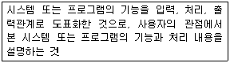
- 상세 도표
- 총괄 도표
- 도식 목차
- 보충 설명
(정답률: 46%)
49. 입력 정보 투입 설계 시 검토사항과 가장 거리가 먼 것은?
- 투입 주기 결정
- 투입 시기 결정
- 투입(입력) 장치 결정
- 매체화 장치 결정
(정답률: 66%)
50. 코드 설계 단계 중 다음 고려사항과 가장 관계있는 것은?
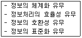
- 코드 목적 명확화
- 코드 대상 항목 결정
- 코드 대상 특성 분석
- 사용 범위 결정
(정답률: 33%)
51. 모듈과 다른 모듈과의 연관성에 관계되는 용어로 가장 옳은 것은?
- 결합도
- 정보 은폐
- 독립성
- 응집도
(정답률: 57%)
52. 컴퓨터 입력단계에서의 검사방법 중 입력된 데이터에 논리적으로 오류가 있는지를 검사하는 방법은?
- 순서검사
- 타당성검사
- 한계검사
- 공란검사
(정답률: 74%)
53. 프로세서 설계에 필요한 흐름도 종류 중 처리 내용, 조건, 입출력 데이터의 종류와 출력 등을 논리적으로 표현한 흐름도는?
- 블록차트
- 시스템흐름도
- 프로세서흐름도
- 프로그램흐름도
(정답률: 34%)
54. 객체 지향 소프트웨어 설계 및 개발 방법에 대한 설명으로 가장 옳은 것은?
- 재사용이 불가능하다.
- 공통된 속성을 명백히 표현할 수 있다.
- 객체 간의 종속성을 최대화한다.
- 소프트웨어 생명주기 상에서 일관적으로 나타낼 수 없다.
(정답률: 54%)
55. 순차파일(Sequential File)의 특징으로 가장 거리가 먼 것은?
- 데이터의 수록이 다른 파일에 비하여 어렵다.
- 데이터 검색 시 시간이 많이 걸린다.
- 처리하는데 불편함이 많아 이용도가 낮다.
- 파일의 내용을 추가, 변경, 삭제하기 매우 편리하다.
(정답률: 65%)
56. 시스템의 특성 중 항상 다른 관련 시스템과 상호의존 관계를 유지하는 것을 의미하는 것은?
- 종합성
- 제어성
- 자동성
- 목적성
(정답률: 63%)
57. 색인 순차 편성파일(indexed sequential file)의 각 구역 중에서 일정한 크기의 블록으로 블록화 하여 처리할 키값을 갖는 레코드가 어느 실린더 인덱스 상에 기록되어 있는가를 나타내는 정보가 수록된 구역은?
- 마스터 인덱스 구역
- 실린더 인덱스 구역
- 트랙 인덱스 구역
- 기본 데이터 구역
(정답률: 42%)
58. 자료 흐름도에 대한 설명으로 옳지 않은 것은?
- 기능별로 분할하고 다차원적이다.
- 자료 흐름도는 논리적으로 일관성이 있어야 한다.
- 처리 공정은 원, 자료저장소는 이중직선, 종착지는 사각형, 자료 흐름은 점선으로 표시한다.
- 시스템의 활동적인 구성 요소 및 그들 간의 연관 관계를 모형화 한다.
(정답률: 65%)
59. 사용자와 면담을 통해 개발 대상 업무 환경과 업무 수행절차를 있는 그대로 조사하는 단계는 구조적 분석 절차 중 어느 단계에 해당하는가?
- 현행 시스템의 물리적 모형화 단계
- 현행 시스템의 논리적 모형화 단계
- 새로운 시스템의 물리적 모형화 단계
- 새로운 시스템의 논리적 모형화 단계
(정답률: 51%)
60. 시스템의 평가항목 중 시스템이 주어진 시간동안 오류 없이 작동할 확률을 말하는 것으로 시스템 전체의 가동률 등을 검토하는 평가는?
- 기능 평가
- 신뢰성 평가
- 성능 평가
- 가격 평가
(정답률: 57%)
4과목: 운영체제
61. 다음 설명의 (A)와 (B)에 들어갈 내용으로 가장 옳은 것은?
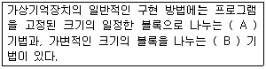
- (A) : Virtual Address, (B) : Paging
- (A) : Paging, (B) : Segmentation
- (A) : Segmentation, (B) : Fragmentation
- (A) : Segmentation, (B) : Compaction
(정답률: 60%)
62. 에이징(aging)기법에 대한 설명으로 가장 옳은 것은?
- 하나 또는 둘 이상의 프로세스가 더 이상 계속할 수 없는 어떤 특정 사건을 기다리고 있는 상태를 말한다.
- 프로세스들이 자원을 배타적으로 점유하고 있어서, 다른 프로세스들이 그 자원을 사용할 수 없도록 만든다.
- 프로세스가 자원을 기다리고 있는 시간에 비례하여 우선순위를 부여함으로써 가까운 시간 내에 자원이 할당될 수 있도록 한다.
- 프로세스에게 일단 할당된 자원은 모두 사용하기 전에는 그 프로세스로부터 도중에 자원을 회수할 수 없다.
(정답률: 59%)
63. 다음은 무엇을 구현하기 위한 방법인가?
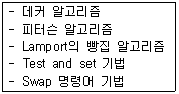
- 세마포어
- 상호배제
- 모니터
- 페이지 교체
(정답률: 52%)
64. 운영체제의 기능으로 가장 거리가 먼 것은?
- 통신 네트워크 관리 기능
- 시스템에서의 에러 처리 기능
- 시스템의 바이러스 자동 퇴치 기능
- 병렬 수행을 위한 편의성 제공 기능
(정답률: 71%)
65. 다음과 같은 CPU 버스트(Burst) 시간을 가진 프로세스들의 집합이 있다. FCFS 스케줄링 알고리즘을 이용했을 때 평균대기 시간(Average Waiting Time)이 가장 적게 걸리는 것은 어느 순서로 작업을 시행하였을 때인가?
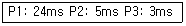
- P1 → P2 → P3
- P3 → P2 → P1
- P2 → P3 → P1
- P1 → P3 → P2
(정답률: 67%)
66. 사용자 암호(Password)에 대한 설명으로 가장 옳지 않은 것은?
- 암호의 추측이 가능한 사용자의 전화번호, 생년월일 등으로는 구성하지 않는 것이 바람직하다.
- 암호가 짧을수록 추측에 의한 암호 발각 가능성이 희박하다.
- 암호는 자주 변경하는 것이 바람직하다.
- 암호는 불법 액세스를 방지하는데 사용된다.
(정답률: 78%)
67. 각 페이지마다 계수기나 스택을 두어 현시점에서 가장 오랫동안 사용하지 않은 페이지를 교체하는 페이지 교체 알고리즘은?
- LFU
- LRU
- FIFO
- SCR
(정답률: 67%)
68. 분산 처리 시스템의 네트워크 위상(Topology)에 따른 분류 중 다음 설명에 해당하는 구조는?
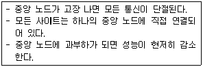
- Hierarchy connection
- Star connection
- Ring connection
- Multiaccess bus connection
(정답률: 70%)
69. 프로세스(process)에 대한 설명으로 틀린 것은?
- 실행중인 프로그램이다.
- 프로시저가 활동 중인 것을 의미한다.
- 비동기적 행위를 일으키는 주체이다.
- 디스크 내에 파일 형태로 보관되어 있는 프로그램을 의미한다.
(정답률: 60%)
70. Non-preemptive형 프로세스 스케줄링 방식에 해당하는 것으로 가장 옳은 것은?
- SJF, SRT
- SJF, FIFO
- Round-Robin, SRT
- Round-Robin, SJF
(정답률: 54%)
71. CPU 스케줄링 기법에서 작업이 끝나기까지의 실행시간 추정치가 가장 작은 작업을 먼저 실행시키는 기법은?
- FIFO
- SRT
- SJF
- HRN
(정답률: 55%)
72. 가상기억장치에서 어떤 프로세스가 충분한 프레임을 갖지 못하여 페이지 교환이 계속적으로 발생하여 전체 시스템의 성능이 저하되는 현상을 의미하는 것은?
- 페이징
- 스레싱
- 스와핑
- 폴링
(정답률: 63%)
73. 카운팅 세마포어에 대한 설명 중 옳지 않은 것은?
- 1 이상의 정수로 초기화되는 세마포어
- 동일한 자원들이 있는 풀에서 자원을 할당할 때 사용
- 풀에 있는 자원 수가 같은 값으로 초기화
- 세마포어가 0까지 줄어들었을 때 대기
(정답률: 42%)
74. 공간 구역성(Spatial Locality)의 사용 경우로 가장 적합하지 않은 것은?
- 카운팅(Counting), 집계(Totaling)에 사용되는 변수
- 순차적 코드(Sequential Code) 실행
- 배열 순회(Array Traversal)
- 같은 영역에 있는 변수를 참조할 때 사용
(정답률: 47%)
75. UNIX에서 커널의 기능이 아닌 것은?
- 프로세스 관리 기능
- 기억장치 관리 기능
- 입, 출력 관리 기능
- 명령어 해독 기능
(정답률: 65%)
76. 초기 헤드의 위치가 100번 트랙이고 디스크 대기 큐에 다음과 같은 순서의 액세스 요청이 대기 중이다. SSTF 스케줄링 기법을 사용하여 액세스 요청을 모두 처리할 경우 가장 마지막에 처리하는 트랙은? (단, 가장 안쪽 트랙 : 0, 가장 바깥 쪽 트랙 : 150)(오류 신고가 접수된 문제입니다. 반드시 정답과 해설을 확인하시기 바랍니다.)
- 16
- 40
- 90
- 112
(정답률: 58%)
77. 다음 접근제어리스트에서 “파일2”가 처리될 수 없는 것은? (단, R=읽기, W=쓰기, P=인쇄, L=공유)
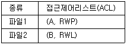
- 읽기
- 쓰기
- 인쇄
- 공유
(정답률: 74%)
78. 분산처리 운영 시스템에 대한 설명으로 가장 옳지 않은 것은?
- 시스템을 구성하는 소형 컴퓨터들의 자율성을 보장하므로 전체 시스템의 통합적 제어기능은 불필요하다.
- 하나의 대형 컴퓨터에서 하던 일을 지역적으로 분산된 여러 개의 소형 컴퓨터에서 분담
- 데이터 처리 장치와 데이터베이스가 지역적으로 분산되어 있으며 정보교환을 위해 네트워크로 상호 결합된 시스템이다.
- 자료가 중앙에 집중된 대형 컴퓨터의 고장으로 인한 업무 마비를 예방할 수 있다.
(정답률: 66%)
79. I/O(입출력) 방식 중 사이클 스틸링을 사용하는 것은?
- 프로그램 입출력방식
- 인터럽트 입출력방식
- DMA 방식
- 스풀링 방식
(정답률: 45%)
80. 주기억장치 관리기법 중 “Best Fit” 기법 사용 시 20K의 프로그램은 주기억장치 영역 번호 중 어느 곳에 할당되는가?
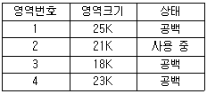
- 영역 번호 1
- 영역 번호 2
- 영역 번호 3
- 영역 번호 4
(정답률: 63%)
5과목: 정보통신개론
81. 수신 단에서 디지털 전송 신호로부터 데이터 비트를 복원하는 장치는?
- Allocation
- Transformer
- Mesh
- Decoder
(정답률: 64%)
82. 원신호를 복원하기 위해서 샘플링주파수는 샘플링 되는 신호의 최고주파수에 비하여 최소한 몇 배 이상이 되어야 하는가?
- 1
- 2
- 3
- 4
(정답률: 68%)
83. 데이터를 목적지까지 빠르게, 일정한 속도로, 신뢰성 있게 보내기 위해 대역폭, 우선순위 등 네트워크 자원을 할당해 주어진 네트워크 자원에 각종 응용프로그램의 송신 수요를 지능적으로 맞춰주는 여러 가지 기술을 총칭하는 용어는?
- NTP
- QoS
- RADIUS
- SMTP
(정답률: 48%)
84. OSI 7 계층에서 데이터링크계층의 기능에 해당하는 것은?
- 코드변환
- 우편 서비스
- 네트워크 가상 터미널
- 오류제어
(정답률: 48%)
85. 광섬유 케이블의 설명으로 틀린 것은?
- 동축 케이블보다 더 넓은 대역폭을 지원한다.
- 전송속도가 UTP 케이블보다 빠르다.
- 동축 케이블에 비해 전자기적 잡음에 약하다.
- 동축 케이블에 비해 전송손실이 적다.
(정답률: 71%)
86. 멀티포인트 네트워크에서 단말로부터 제어국 방향으로 데이터를 전송하는 동작을 무엇이라 하는가?
- entity
- routing
- PCI
- polling
(정답률: 42%)
87. 데이터 전송의 흐름이 양방향으로 전송이 가능하지만, 동시에 양방향으로 전송할 수 없으므로 정보의 흐름을 전환하여 반드시 한 방향으로만 전송하는 전송 방식은?
- 전이중(Full Duplex) 방식
- 반이중(Half Duplex) 방식
- 단방향(Simplex) 방식
- 비동기(Asynchronous) 전송 방식
(정답률: 73%)
88. TCP 프로토콜에 대한 설명으로 틀린 것은?
- 신뢰성 있는 전송 프로토콜이다.
- 전이중 서비스를 제공한다.
- 비연결형 프로토콜이다.
- 스트림 데이터 서비스를 제공한다.
(정답률: 62%)
89. 신호 대 잡음비가 15이고, 대역폭이 1200[Hz]라고 하면 통신용량(bps)은?
- 1200
- 2400
- 4800
- 9600
(정답률: 59%)
90. 비패킷형 단말기들을 패킷교환망에 접속이 가능하도록 데이터를 패킷으로 조립하고, 수신측에서는 분해해주는 것은?
- PAD
- X.30
- Li-Fi
- NIC
(정답률: 63%)
91. Link State 방식으로 라우팅 프로토콜은?
- RIP
- RIP V2
- IGRP
- OSPF
(정답률: 52%)
92. 아날로그 데이터를 디지털 신호로 변환하는 대표적인 PCM(Pulse Code Modulation)변조 방식의 과정은?
- 표본화 → 양자화 → 부호화 → 복호화 → 여과
- 표본화 → 여과 → 부호화 → 복호화 → 양자화
- 표본화 → 부호화 → 양자화 → 복호화 → 여과
- 표본화 → 여과 → 복호화 → 부호화 → 양자화
(정답률: 73%)
93. 회선 양쪽 시스템이 처리 속도가 다를 때 데이터양이나 통신 속도를 수신 측이 처리할 수 있는 능력을 넘어서지 않도록 조정하는 기술은?
- 인증제어
- 흐름제어
- 오류제어
- 동기화
(정답률: 73%)
94. LAN의 토폴로지 형태에 해당하지 않는 것은?
- Star형
- Bus형
- Ring형
- Square형
(정답률: 75%)
95. 주파수분할 다중화(FDM)방식에서 보호대역(guard band)의 역할로 가장 옳은 것은?
- 주파수 대역폭 확장
- 신호의 세기를 증폭
- 채널간의 간섭을 제한
- 많은 채널을 좁은 주파수 대역에 포함
(정답률: 71%)
96. 1200[baud]의 변조속도를 갖는 전송선로에서 신호 비트가 3bit이면, 전송속도[bps]는?
- 1200
- 2400
- 3600
- 4800
(정답률: 73%)
97. IPv4망에서 IPv6망으로 전이기법이 아닌 것은?
- Dual Stack
- Tunneling
- Translation
- Fragmentation
(정답률: 45%)
98. ITU-T에서 1976년에 패킷교환망을 위한 표준으로 처음 권고한 프로토콜은?
- X.25
- I.9577
- CONP
- CLNP
(정답률: 72%)
99. HDLC에서 한 프레임(Frame)을 구성하는 요소로 가장 거리가 먼 것은?
- Flag
- Address Field
- Control Field
- Start/Stop bit
(정답률: 66%)
100. M진 PSK에서 반송파간의 위상차는? (단, M은 진수이다.)
- π×M
- (2π)/(3M)
- (√π)/M
- 2π/M
(정답률: 69%)